Every problem, and its fix
Every change from the patch notes so far, oldest first, from Harry, Leo and Mikey. Each one says what was wrong, why it happened, and what fixed it, so it reads fine even if you weren't there.
The guard: the game can't quietly split into copies again
A fix to the real match missed every one of these.
4 copies left, and the list can only shrink.
Why it's the headline: most of the "this feels different" problems further down this page were one of these copies drifting. The guard is what stops that class of problem coming back. Full detail in Harry's v0.10.
At a glance
Every change by version. Tap one to jump to its card.
v0.1 · Harry — Chance generator switched on, gallery rebuilt (16)
- Scoring was halved
- The same few chances kept coming up
- The goal changed size from chance to chance
- A tighter camera made the goal go missing
- Chances didn't match their own name
- On long shots the defence sat on its own keeper
- A team-mate's rebound counted as your goal
- Your own team-mates stood in front of your shot
- No way to see a chance exactly as the match serves it
- Checking chances meant one at a time
- You couldn't add or remove players in a scenario
- Only 10 versions per chance type
- No way out of the full-screen dev pages
- Commit to repo had never really been used
- The gallery was 15 screens of scrolling
- Too many long shots, not enough one-on-ones
v0.2 · Leo — Goalie Mode: a keeper minigame, built in four rounds (10)
- No way to play as the keeper
- The first camera showed a giant head, not a goal
- On a phone, any touch dived straight away
- The camera zoom made the shot hard to judge
- Your aim wasn't under your cursor
- The pitch looked like an ice rink
- The goal stood in front of a flat sky
- Every shot felt the same
- The goalmouth was empty apart from the striker
- No penalties or free kicks to face
v0.3 · Harry — Scenario saving made clear, auto-tuner added (19)
- A committed scenario only reached one person
- Nothing said whether a scenario was saved or committed
- Every commit meant its own two-minute rebuild
- No-go didn't really stop bad chances
- There was no way to delete a scenario
- Playing a chance took over the screen with no way back
- Drawn chances didn't shape the chances the game makes
- One odd drawing switched the rules off
- No way to correct a bad generated chance
- Your own team-mates stood in front of your shot
- Offside was called on players who weren't offside
- A randomised chance put the keeper in the wrong place
- Plain one-on-ones broke the drawn rules
- Leo couldn't see scenarios the game was using
- Saving one scenario repainted others
- The poacher couldn't be removed
- A deploy failed because of a font
- The patch notes page showed MIGRATION NOT RUN
- Leo's Goalie Mode was spread over three versions
v0.3.5 · Harry — Gallery fixes and decisions from the call (4)
v0.4 · Harry — Play keeps your drawing; Infinite Match (8)
- Pressing Play moved everything you'd drawn
- On a computer, the buttons fell off the bottom of the scenario card
- Untouched chances were labelled "Draft"
- Test settings could only be changed in the code
- There was no way to check which chances a match actually gives you
- You couldn't see scenarios before committing them
- Infinite Highlights couldn't tune or properly delete a chance
- Your position barely changed which chances you got
v0.6 · Mikey — Wages, fame, reputation and energy rebuilt (18)
- Careers got stuck at End of Season
- Careers ended after about 22 seasons
- Premier League wages topped out at ★11,933 a week
- Energy cans cost the same whatever you earned, and Stat Cans are gone
- First boots were expensive and lasted too long
- Fame had no ceiling and came just from playing
- An advert gave more fame than winning the league
- Things you owned gave fame forever
- A scandal only took fame away
- Reputation was four separate bars
- Sponsor deals lasted forever once signed
- You could only sell your whole stake in a club
- No way to choose how hard to work in a match
- The match minute jumped around
- No way to top up energy at half time
- Doing nothing all week refilled your energy
- Every competition was equally tiring
- Being tired barely mattered
v0.5 · Leo — Five-a-side freeze fixed; owner powers added (3)
v0.7 · Harry — Gallery Play matches the picture (10)
- Pressing Play made the picture jump
- The ball was stuck to your player
- False "attacker offside" with everyone behind the ball
- Approving a simulated chance didn't save it
- The next "Commit all" would have put old scenarios back
- Team-mates added with "+ Mate" just stood there
- A chance in Infinite Match couldn't be kept or fixed
- Highlights saved in Infinite Highlights never reached the gallery
- Each browser showed a different scenario count
- On a computer, the card buttons were a phone-style stack
v0.8 · Harry — Save from matches, scenario guide, admin help (9)
- You couldn't keep a good chance straight from a match
- The keeper seemed to move when you pressed Play on a phone
- A gallery card could go blank when the screen resized
- Buttons fell off the edge of a phone screen
- Admin pages didn't explain their own buttons
- There was no step-by-step guide to building scenarios
- The team disagreed on difficulty with no evidence either way
- Tune corrections only lived in one browser
- Leo's 11 scenarios weren't in the game yet
v0.9 · Harry — Test screens now play the real match (9)
- A drag kicked harder or softer than in a career
- Test screens played with nobody in the shirts
- Test screens never had any weather
- Infinite Match quietly weakened every kick after minute 150
- Team understanding was ignored in test screens
- Gallery Play restarted in the middle of a kick
- Test screens felt like a different game from a career
- Nothing stopped someone adding a new copy of the match
- No way to switch off the real keeper or weather when testing
v0.10 · Harry — The guard, and trial and training on the real match (6)
v0.10.1 · Harry — Each mode sets its own pitch; five-a-side unstuck; volleys and headers off (3)
v0.11 · Mikey — The pitch matches where people stand (14)
- Players standing behind someone were drawn on top of him
- The ball was drawn across the head of a player in front of it
- Corners were taken 6 to 7.5 metres in from the flag
- Every trophy was an emoji
- You couldn't like a post in the feed
- Feed posts looked like boxed cards, not social media
- Switching energy mode mid-match did almost nothing
- Energy mode buttons were plain
- KIB cans gave small energy top-ups
- NS-Swerve was far cheaper than NS-Maestro
- The gallery had no way to choose a chance's camera
- Long shots had no rules to build new ones from
- The Scout Report's tactics box took too much of the page
- Four small numbers were reading the wrong scale
v0.12 · Mikey — Training rebuilt the New Star Soccer way (10)
- Training was a new random picture every time, and skills rose in lumps
- Level 1 started with no explanation
- Vision's timer started the moment the pitch appeared
- Free kick started lower than every other skill
- Matches raised every skill
- Training vision past 70 did nothing in matches
- Pace made no difference to the Touch Mode chase
- Free kick didn't count on corners or decide who takes set pieces
- The Skills screen didn't say what each skill does
- Testing a late training level meant playing every level before it
v0.13 · Mikey — How you get picked: win your shirt (4)
Monday 21 September
Scoring was halved
The same few chances kept coming up
The goal changed size from chance to chance
A tighter camera made the goal go missing
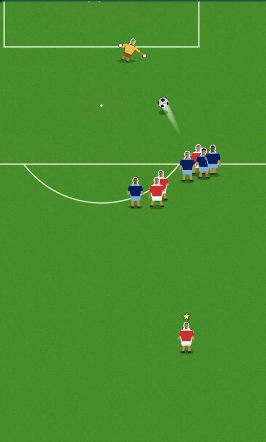
Chances didn't match their own name
On long shots the defence sat on its own keeper
A team-mate's rebound counted as your goal
Your own team-mates stood in front of your shot
No way to see a chance exactly as the match serves it
Checking chances meant one at a time
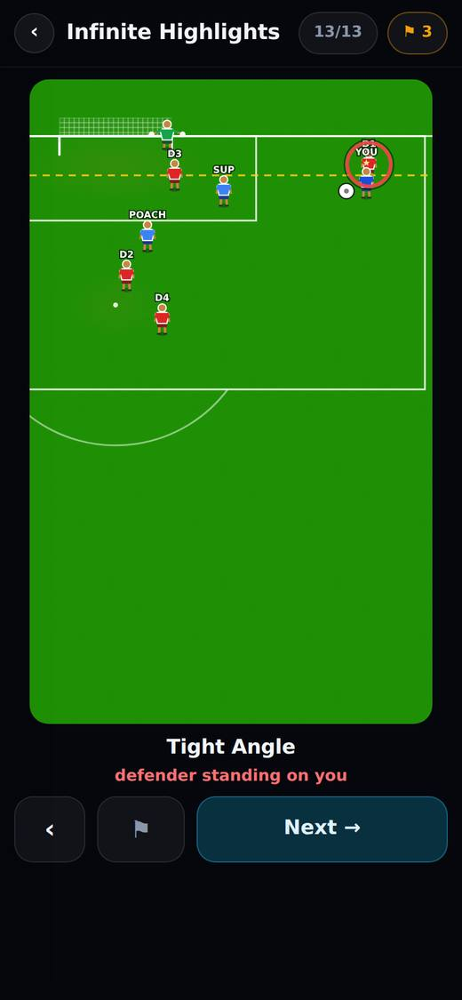
You couldn't add or remove players in a scenario
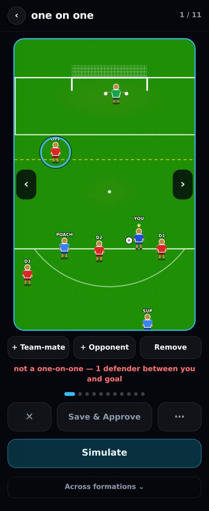
Only 10 versions per chance type
No way out of the full-screen dev pages
Commit to repo had never really been used
The gallery was 15 screens of scrolling
Too many long shots, not enough one-on-ones
Tuesday 22 September
No way to play as the keeper
The first camera showed a giant head, not a goal
On a phone, any touch dived straight away
The camera zoom made the shot hard to judge
Your aim wasn't under your cursor
The pitch looked like an ice rink
The goal stood in front of a flat sky
Every shot felt the same
The goalmouth was empty apart from the striker
No penalties or free kicks to face
A committed scenario only reached one person
Nothing said whether a scenario was saved or committed
Every commit meant its own two-minute rebuild
No-go didn't really stop bad chances
There was no way to delete a scenario
Playing a chance took over the screen with no way back
Drawn chances didn't shape the chances the game makes
One odd drawing switched the rules off
No way to correct a bad generated chance
Your own team-mates stood in front of your shot
Offside was called on players who weren't offside
A randomised chance put the keeper in the wrong place
Plain one-on-ones broke the drawn rules
Leo couldn't see scenarios the game was using
Saving one scenario repainted others
The poacher couldn't be removed
A deploy failed because of a font
The patch notes page showed MIGRATION NOT RUN
Leo's Goalie Mode was spread over three versions
Delete only seemed to work on one-on-ones
Nobody could tell what the X button did
The scenario picture was phone-sized on a computer
It was unclear whether to commit each scenario
Pressing Play moved everything you'd drawn
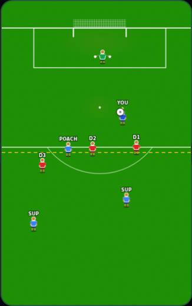
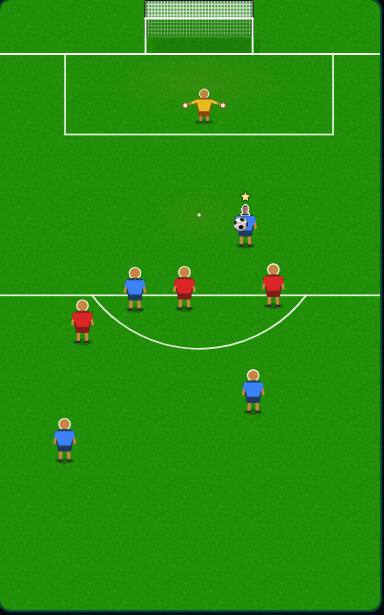
On a computer, the buttons fell off the bottom of the scenario card
Untouched chances were labelled "Draft"
Test settings could only be changed in the code
There was no way to check which chances a match actually gives you
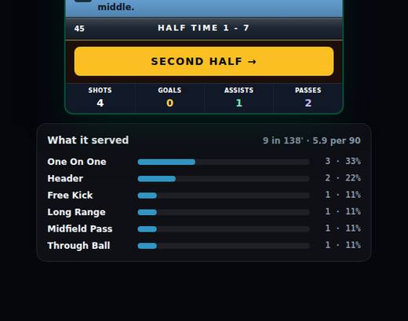
You couldn't see scenarios before committing them
Infinite Highlights couldn't tune or properly delete a chance
Your position barely changed which chances you got
Careers got stuck at End of Season
Careers ended after about 22 seasons
Premier League wages topped out at ★11,933 a week
Energy cans cost the same whatever you earned, and Stat Cans are gone
First boots were expensive and lasted too long
Fame had no ceiling and came just from playing
An advert gave more fame than winning the league
Things you owned gave fame forever
A scandal only took fame away
Reputation was four separate bars
Sponsor deals lasted forever once signed
You could only sell your whole stake in a club
No way to choose how hard to work in a match
The match minute jumped around
No way to top up energy at half time
Doing nothing all week refilled your energy
Every competition was equally tiring
Being tired barely mattered
Wednesday 23 September
Five-a-side froze when the other team got the ball
Testing a late-game situation meant playing the whole game to get there
Owning the club you played for gave you less power, not more
Pressing Play made the picture jump
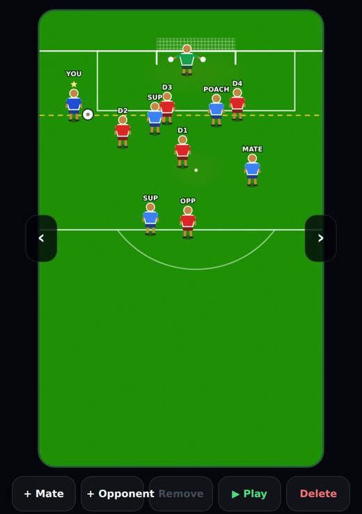
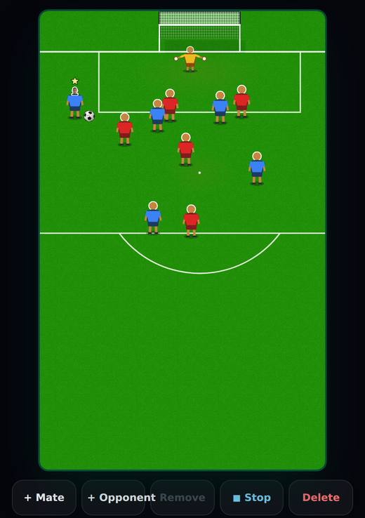
The ball was stuck to your player
False "attacker offside" with everyone behind the ball
Approving a simulated chance didn't save it
The next "Commit all" would have put old scenarios back
Team-mates added with "+ Mate" just stood there
A chance in Infinite Match couldn't be kept or fixed
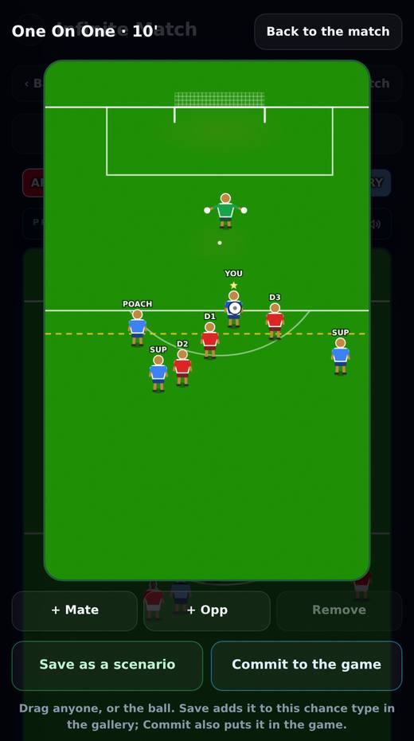
Highlights saved in Infinite Highlights never reached the gallery
Each browser showed a different scenario count
On a computer, the card buttons were a phone-style stack
You couldn't keep a good chance straight from a match
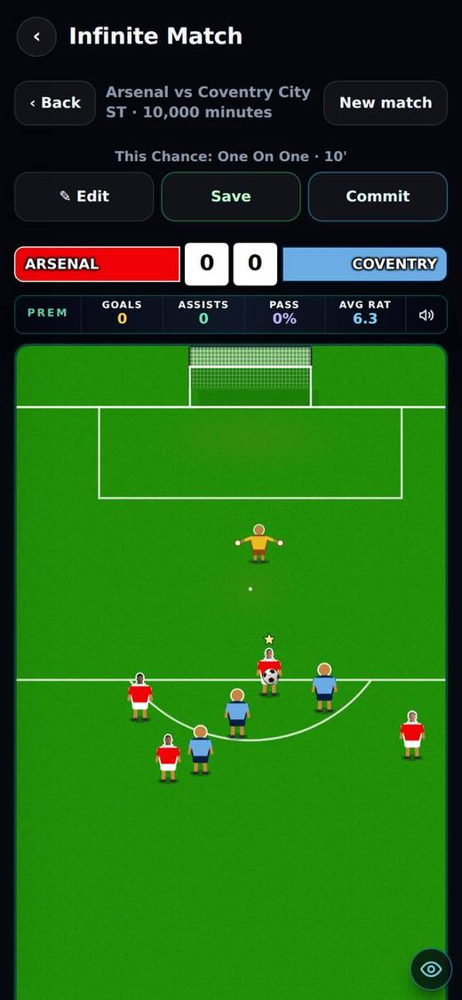
The keeper seemed to move when you pressed Play on a phone
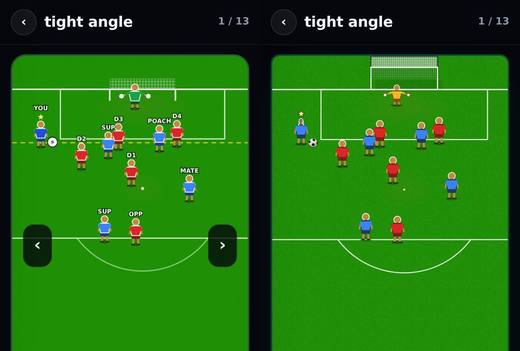
A gallery card could go blank when the screen resized
Buttons fell off the edge of a phone screen
Admin pages didn't explain their own buttons
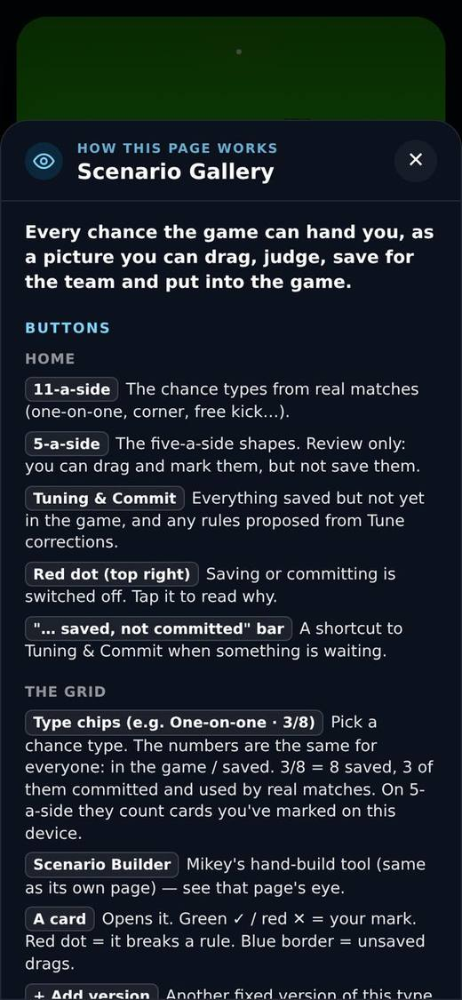
There was no step-by-step guide to building scenarios
The team disagreed on difficulty with no evidence either way
Tune corrections only lived in one browser
Leo's 11 scenarios weren't in the game yet
Thursday 24 September
A drag kicked harder or softer than in a career
Test screens played with nobody in the shirts
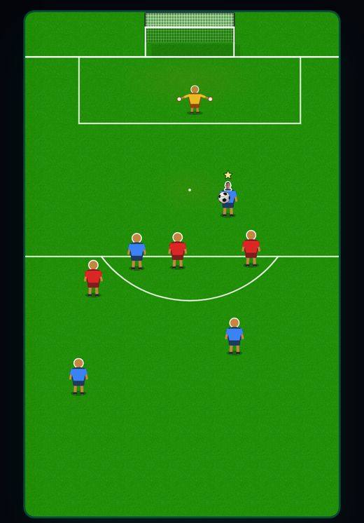
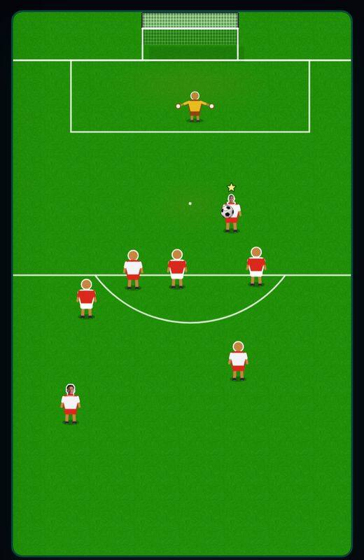
Test screens never had any weather
Infinite Match quietly weakened every kick after minute 150
Team understanding was ignored in test screens
Gallery Play restarted in the middle of a kick
Test screens felt like a different game from a career
Nothing stopped someone adding a new copy of the match
No way to switch off the real keeper or weather when testing
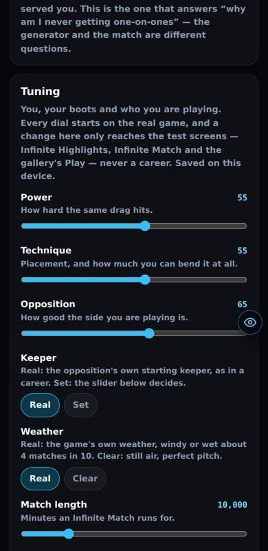
This round's biggest change, the guard, is the headline at the top of this page.
The trial's penalties and free kicks didn't play like a match


Penalties in the corner always went in
Training kicked differently from a match
Five-a-side's arrow and drag didn't match the match
A gallery corner looked different when you pressed Play

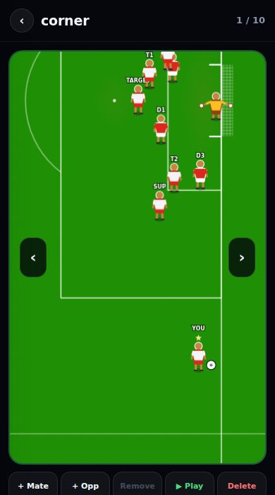
Some teams wore the same two colours, swapped
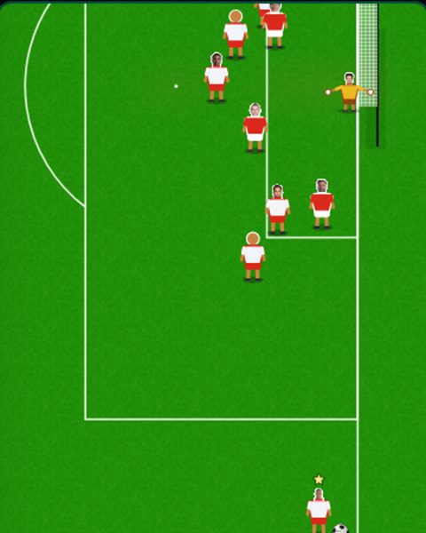
Every drill had a keeper and a goal, even the ones that don't need one
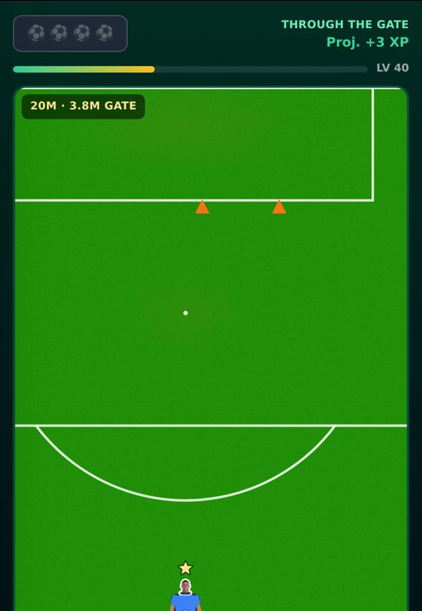
Five-a-side froze when a team-mate had the ball
Volley and header chances are switched off for now
Friday 25 September
Players standing behind someone were drawn on top of him
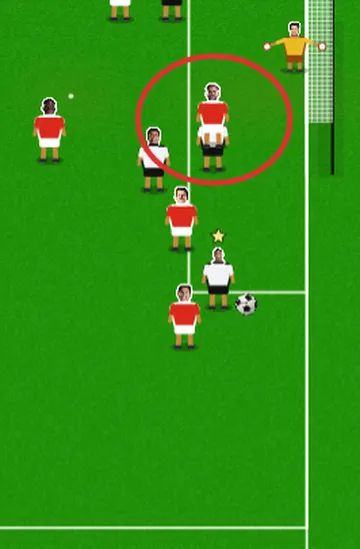
The ball was drawn across the head of a player in front of it
Corners were taken 6 to 7.5 metres in from the flag
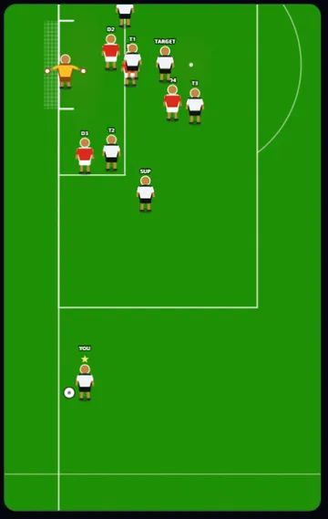
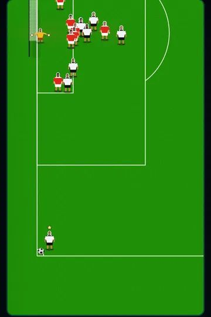
Every trophy was an emoji
You couldn't like a post in the feed
Feed posts looked like boxed cards, not social media
Switching energy mode mid-match did almost nothing
Energy mode buttons were plain
KIB cans gave small energy top-ups
NS-Swerve was far cheaper than NS-Maestro
The gallery had no way to choose a chance's camera
Long shots had no rules to build new ones from
The Scout Report's tactics box took too much of the page
Four small numbers were reading the wrong scale
Training was a new random picture every time, and skills rose in lumps
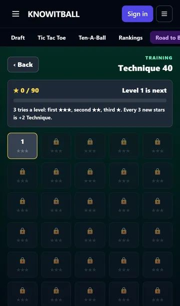
Level 1 started with no explanation
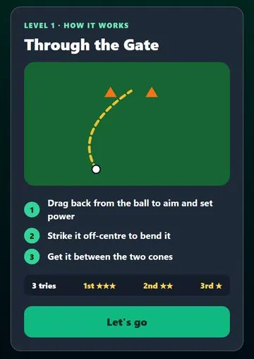
Vision's timer started the moment the pitch appeared
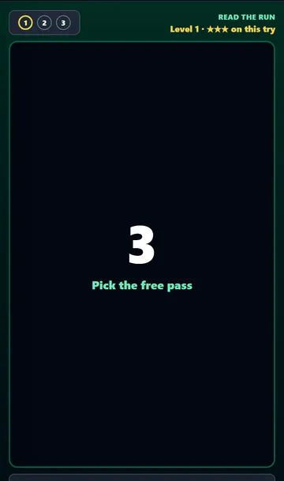
Free kick started lower than every other skill
Matches raised every skill
Training vision past 70 did nothing in matches
Pace made no difference to the Touch Mode chase
Free kick didn't count on corners or decide who takes set pieces
The Skills screen didn't say what each skill does
Testing a late training level meant playing every level before it
Saturday 26 September
A new 18-year-old started every game, even at Man City
Form took five games to count
A substitute always came on between 58' and 72'
Early cup rounds were picked like league games
Still open
Known issues raised in any version that no later version fixed. Oldest first.
Six security holes are still open
Still too much build-up
Byline crosses are rare for a striker
5 chances in 6,612 have an attacker offside
The wall and the extra players don't touch the ball
How hard the keeper covers his near post is undecided
How often anyone should be offside is undecided
Two base faults left alone on purpose
Only one-on-ones have drawn scenarios
The Infinite Match showed 1-7 at half time
Half time still happens at minute 45 in a very long match
One number was changed in the engine file Mikey said never to touch
5 of 11 dev tool pages have no login check
Switching energy mode changes your chances a little late
Buying a stake can quietly buy less than you typed
The goal net is deeper in the match than on the picture
Team-mates right next to you steal your shot as a pass
Keepers on rebounds are too good, and too often off their line
The draft-dev pages aren't sandboxes
The Scenario Builder can't reach the game
The Tuning editor saves in that browser only
Small admin gaps
Goalie Mode has no engine at all
Two dev prototypes are full copies of the match
Players barely react after shots in drawn one-on-ones
A scenario test fails on main
The guard can't stop a person editing its list
Google Analytics counts our own test browsers as new UK users
Pitch drawing fixes not yet seen in a real career match
Trial: the dribble stage starts behind its how-to card
Scenario editor "ball at your feet" was undone
Winning a training level not yet seen on a screen
The "Not this time" screen wasn't caught
Two drawing tests fail on main
Selection changes not seen in a real career yet
Original pages
- v0.1 · Harry · 2026-09-21 · no link (the site archive has it)
- v0.2 · Leo · 2026-09-22 · https://claude.ai/artifact/HD5yGHLCNQxHHwGAnrXS7o
- v0.3 · Harry · 2026-09-22 · https://claude.ai/artifact/PhoNj7N3AvoR8keYRMAkZN
- v0.3.5 · Harry · 2026-09-22 · https://claude.ai/artifact/L4zdK7X44YctKBvHsPTZhB
- v0.4 · Harry · 2026-09-22 · https://claude.ai/artifact/XcQqdgi1WDVUcPBwKf8vbC
- v0.5 · Leo · 2026-09-23 · https://claude.ai/artifact/YEuw3iut76VY2dZiQVarZd
- v0.6 · Mikey · 2026-09-22 · https://claude.ai/artifact/4fuKfUh73WvRmxLdiU9tPu
- v0.7 · Harry · 2026-09-23 · https://claude.ai/artifact/U1uHCBfUzgsoozGaFnKxTG
- v0.8 · Harry · 2026-09-23 · https://claude.ai/artifact/DYAaW3Bma3zowkG5DcoQaS
- v0.9 · Harry · 2026-09-24 · https://claude.ai/artifact/5njEpoPHxLK1oWvin2NLhZ
- v0.10 · Harry · 2026-09-24 · https://claude.ai/artifact/5njEpoPHxLK1oWvin2NLhZ
- v0.10.1 · Harry · 2026-09-24 · no link (the site archive has it)
- v0.11 · Mikey · 2026-09-25 · https://claude.ai/artifact/SoBMWDhZGj58LXwP4CFARm
- v0.12 · Mikey · 2026-09-25 · https://claude.ai/artifact/FYpjCv5GQ4NPTN9qv4BhwQ
- v0.13 · Mikey · 2026-09-26 · https://claude.ai/artifact/Q681hvwMs83X9895Aevav7
Built from those pages and the project history. Where a page didn't say why something happened, the card says "Not recorded" rather than guessing.